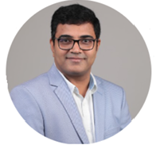

Chairman, Telangana State Council of Higher Education (TSCHE)
Research Areas
Legal Studies, International Studies, Higher Education Policy, Academic Administration
Profile
Prof. Balakista Reddy is an eminent academician, legal expert, and a distinguished figure in the field of higher education and legal studies. Currently serving as the Chairman of the Telangana State Council of Higher Education (TSCHE), he has demonstrated exceptional leadership in shaping educational policies.
With a rich legacy of academic and administrative excellence, Prof. Reddy has been instrumental in shaping policies and initiatives to enhance the quality of higher education in Telangana. His scholarly contributions extend across various domains of legal and international studies, making him a respected voice in academia.
As Chairman of TSCHE, he has been at the forefront of driving reforms and fostering innovation in the state's higher education system. His vision for an inclusive and robust education system has led to significant improvements in academic standards and educational opportunities for students across Telangana.
Prof. Reddy's expertise in legal studies, combined with his deep understanding of educational administration, has enabled him to implement effective policies that bridge the gap between academic theory and practical implementation. His leadership style emphasizes innovation, quality, and accessibility in higher education.
His unwavering commitment to empowering youth through education has made him an inspiring figure in the academic community. Through his various roles and responsibilities, he continues to contribute significantly to the advancement of higher education in the region.
Professional Excellence
Chairman, Telangana State Council of Higher Education
Distinguished Legal Expert and Academician
Significant Contributions to Legal and International Studies
Leader in Higher Education Policy Development
Driving Force Behind Educational Reforms in Telangana
Advocate for Innovation and Quality in Academia
Telangana State Council of Higher Education
Prof. V Kamakshi Prasad
Senior Professor, Department of Computer Science & Engineering
JNTUH College of Engineering Science & Technology, Hyderabad
Professor V. Kamakshi Prasad is a distinguished academic with over three decades of exemplary service in teaching, research, and academic administration at JNTUH College of Engineering Science & Technology. His commitment to academic excellence and innovative research has significantly shaped the computer science department's growth and development.
Throughout his remarkable 31-year journey in academia, Professor Prasad has demonstrated exceptional leadership in various administrative capacities. His academic journey commenced with a B.Tech. from KLCE, followed by an M.Tech. from Andhra University College of Engineering, and culminated in a Ph.D. from the prestigious IIT Madras. Since joining JNTU as an Assistant Professor in 1992, he has progressively advanced through the academic ranks, being promoted to Associate Professor (2003), Professor (2006), and Senior Professor (2016).
His administrative acumen is evidenced by his successful tenure in numerous key positions, including Additional Controller of Examinations, TEQIP-II Coordinator, Head of the CSE Department, Controller of Examinations, Director of Innovative Technologies, and Director of Evaluation. Currently, he serves as the Chairperson of the Board of Studies for CSE and CSE allied branches, where he continues to drive curriculum innovation and academic excellence.
Professor Prasad's influence extends beyond JNTUH through his active participation in various academic bodies. He serves as a member of multiple Boards of Studies, Academic Councils, and Governing Bodies across autonomous and non-autonomous institutions. His expertise was recognized at the national level when he was appointed as the Visitor's (President of India) nominee for the Executive Council of MANUU, Hyderabad, and as a board member of the School of Computer and Information Sciences at Hyderabad Central University.
His research supervision has been particularly noteworthy, having guided 29 Ph.D. candidates and 3 MS degree holders to successful completion, with 8 more doctoral scholars currently under his mentorship. In recognition of his outstanding contributions to education and research, he was honored with the prestigious Telangana State Teacher Award for the year 2020.
Recipient of Telangana State Teacher Award (2020) for Outstanding Contributions to Education
Chairperson, Board of Studies for CSE and Allied Branches at JNTUH
Successful Supervision of 29 Ph.D. Scholars and 3 MS Degree Holders
Member of Multiple Academic Councils and Executive Bodies across Universities
President's Nominee for MANUU Executive Council
31 Years of Progressive Academic Leadership and Research Excellence
kamakshiprasad@jntuh.ac.in
Department of CSE, JNTUH College of Engineering

Somayajula Kartikay Ayalh
MassMutual, Director of Technology Delivery
Areas of Expertise
IT Strategy, Digital Transformation, Cloud Computing, AI/IoT, Agile-Scrum, DevOps, Process Optimization
Profile
An accomplished IT Strategist with over 20 years of experience in driving multi-million-dollar IT, digital, and cloud transformation programs. Kartik has established a strong track record in building technology units, global capability centers, and automation centers of excellence for multinational corporations.
In his current role as Director of Technology Delivery at MassMutual, Kartik oversees policy administration projects across Mainframe, Java, Analytics, and SAP technologies. He has been instrumental in pioneering significant changes in policy administration product suites and represented MassMutual India on the BFSI Consortium.
His expertise spans legacy system modernization, leveraging digital, cloud, AI, IoT, big data, and analytics to achieve process automation and operational efficiency. As a Certified Scrum Master and Agile practitioner, he specializes in strategic consulting for early automation and shift-left goals.
Kartik has contributed significantly to product vision and go-to-market strategies, leading the development of user-friendly, industry-leading digital products that achieved notable market success. His process optimization expertise through Six Sigma and Lean methodologies has established new benchmarks in delivery excellence.
Beyond his professional achievements, Kartik is actively involved in CSR activities focused on student empowerment and skill development. His leadership philosophy, inspired by Jack Welch's wisdom, emphasizes personal growth and the development of others.
Professional Excellence
20+ Years of IT Strategy and Transformation Leadership
Certified Scrum Master and Agile Practitioner
Expert in Digital and Cloud Transformation
Six Sigma and Lean Methodology Specialist
BFSI Consortium Representative for MassMutual India
Active Contributor to CSR and Student Empowerment Initiatives
MassMutual
Keynote Speakers
Bharathi Yogaraj
Product Lead, MathWorks
Keynote Topic
Deep Learning Deployment: Challenges and Solutions
Abstract
Bharathi Yogaraj , Product lead at MathWorks , leads the Vision and Deep Learning HDL
group. Her team focuses on Vision IP development and deployment of Deep learning-based
vision applications onto FPGAs and SoCs.
Bharathi has a Bachelor's in Electronics and
Communication from JNNCE(VTU). Her research interests include optimized HDL design,
deep
learning deployment, image processing, and heterogeneous system integration. Prior
to
joining MathWorks, Bharathi worked at Uurmi Systems and Vrinda technologies,
primarily
focused on design and development of high-speed systems and HDL IPs for
communication
and vision applications.
Professional Background
Leads Vision and Deep Learning HDL group at MathWorks
Bachelor's in Electronics and Communication from JNNCE(VTU)
Expertise in HDL design and deep learning deployment
Previous experience at Uurmi Systems and Vrinda technologies
Vijender Busi Reddy
Scientist, ISRO
Research Focus
Deep Learning Applications in Remote Sensing
Abstract
Dr. Vijender Busi Reddy is a scientist at ISRO, specializing in deep learning applications for remote sensing images and security in wireless networks.
His work focuses on developing real-time object detection methods in remote sensing images and trust-based security models for Ad-Hoc wireless networks and IoT. He has made significant contributions to the field through his research and publications in prestigious journals and conferences, including IEEE and Inderscience. His expertise spans across artificial intelligence, network security, and Internet of Things, and he regularly shares his knowledge through lectures on security, AI, privacy, and IoT to trainees and faculty.
Professional Background
Scientist at ISRO since 2008
Ph.D. in Computer Science from University of Hyderabad (2018)
M.Tech from IIT Roorkee (2006)
IEEE Senior Member
Best Project Achievement Award, ISRO (2009)
Life Member of Astronomical Society of India (ASI)
Former Research Engineer at HP R&D Labs, Bangalore
Dr. Odelu Vanga
Assistant Professor (Grade-I)
Department of Computer Science and Engineering, IIIT Sri City, Andhra Pradesh
Research Focus
Cryptography, Network Security, Internet of Things, and Blockchain Technology
Profile
Dr. Odelu Vanga is a distinguished academic and researcher at IIIT Sri City, recognized among the World's Top 2% Scientists by Stanford University. His expertise spans theoretical computer science, cryptography, and network security, with significant contributions to academic research and development.
Dr. Vanga's academic journey reflects a remarkable commitment to excellence in computer science and mathematics. He completed his Ph.D. in Theoretical Computer Science, specializing in Cryptography and Network Security, from IIT Kharagpur, complemented by an M.Tech. in Computer Science and Data Processing from the same institution. His strong foundation in mathematics is evidenced by his M.Sc. in Applied Mathematics from Kakatiya University.
His professional trajectory includes prestigious positions at leading institutions. Prior to his current role at IIIT Sri City, he served as an Assistant Professor at BITS Pilani, Hyderabad Campus, and as a Research Professor at Korea University, South Korea. He also contributed to the Department of Mathematics at RGUKT, Basar.
In the realm of academic leadership, Dr. Vanga has served as the Organizing Chair of the International Conference on Mining Intelligence and Knowledge Exploration (MIKE-2019) and as Track Chair for Intelligent Security Systems (MIKE-2017 & 2018). His editorial contributions include serving as Guest Editor for the Topical Issue on Security and Privacy 2020 in SN Computer Science, Springer. He actively participates in the academic community as a reviewer for numerous SCI-indexed journals, including prestigious ACM/IEEE Transactions, and serves on Technical Program Committees for international conferences.
Distinguished Recognition
IEEE Senior Member (2022)
Listed in World's Top 2% Scientists Rankings by Stanford University (2022-Present)
Outstanding Young Foreign Scholar - Korean Research Fellowship (KRF-2017)
Outstanding Potential for Excellence in Research and Academics (OPERA) - BITS Pilani
GATE All India Fifth Rank (99.82 percentile) in Mathematics
CSIR-JRF in Mathematical Sciences (2008)
Published over 70 papers in international journals and conferences
Active reviewer for ACM/IEEE Transactions and international conferences
odelu.vanga@iiits.in
+91-73064 73364
Department of CSE, IIIT Sri City, Chittoor
Dr. Pawan Lingras
Professor, Department of Mathematics and Computing Science
Saint Mary's University, Halifax, Nova Scotia, Canada
Director, Master of Science in Computing and Data Analytics Program
Research Areas
Data Mining, Artificial Intelligence, Machine Learning, Big Data, Wearable Technology, Image Processing, Intelligent Transportation Systems, Evolutionary Algorithms
Profile
Dr. Pawan Lingras is a distinguished academic with extensive experience in computing science and data analytics. His research and teaching have significantly impacted the field of computer science and data analytics, earning him multiple prestigious awards and grants.